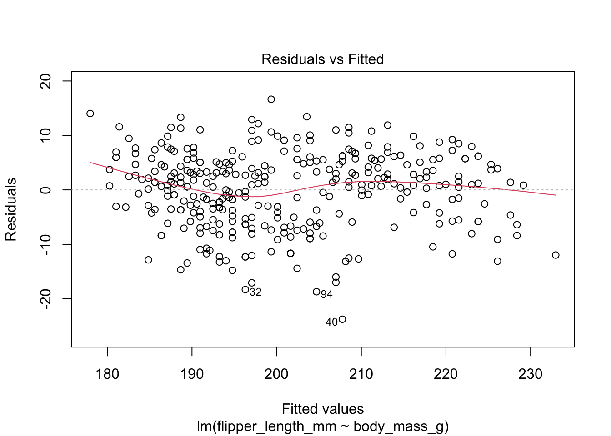
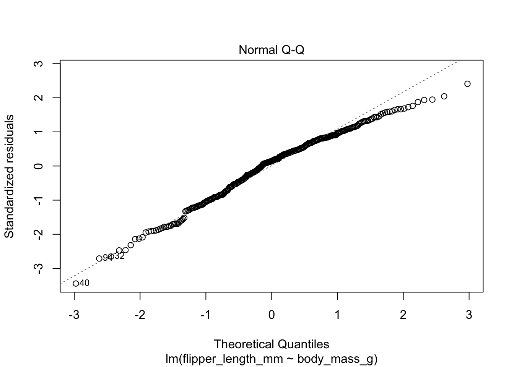
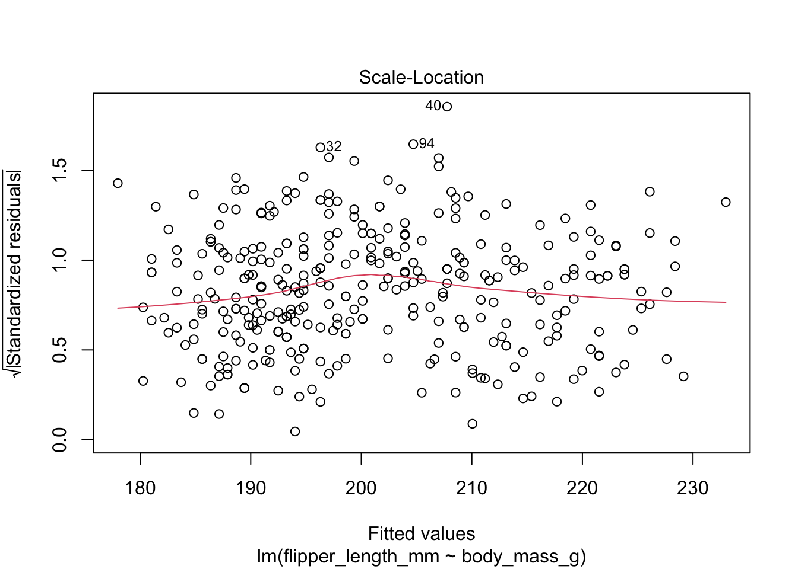
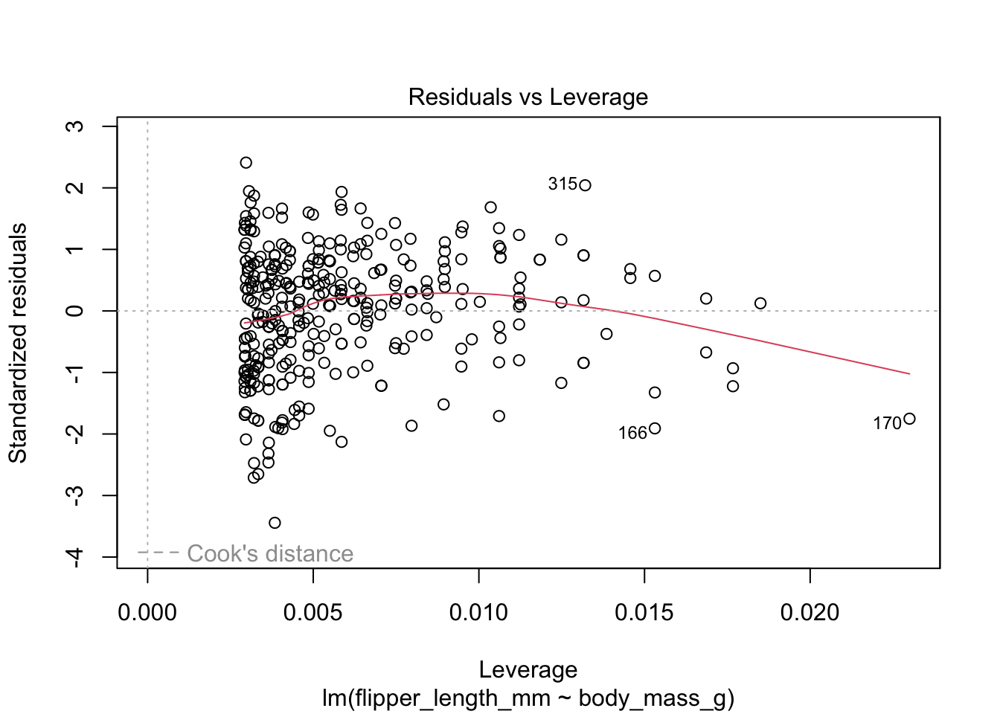

Explore association between two variables, assign a strength to this relationship.
Are variables changing or shifting in the same direction as one another (positive) or in opposition (negative)?
Be careful of assuming causal relationships. Causation != correlation.
Acknowledge what is not measured or observed
Data import & R environment
library(tidyverse)
Warning: package 'ggplot2' was built under R version 4.2.3
Warning: package 'tidyr' was built under R version 4.2.3
Warning: package 'readr' was built under R version 4.2.3
Warning: package 'dplyr' was built under R version 4.2.3
Warning: package 'stringr' was built under R version 4.2.3
── Attaching core tidyverse packages ──────────────────────── tidyverse 2.0.0 ──
✔ dplyr 1.1.4 ✔ readr 2.1.5
✔ forcats 1.0.0 ✔ stringr 1.5.1
✔ ggplot2 3.5.1 ✔ tibble 3.2.1
✔ lubridate 1.9.3 ✔ tidyr 1.3.1
✔ purrr 1.0.2
── Conflicts ────────────────────────────────────────── tidyverse_conflicts() ──
✖ dplyr::filter() masks stats::filter()
✖ dplyr::lag() masks stats::lag()
ℹ Use the conflicted package (<http://conflicted.r-lib.org/>) to force all conflicts to become errors
Linear regression
When we have two continuous variables we can consider a linear regression. The amount of change in variable A that is associated with change in variable B is considered the “covariance of variables” (i.e., how do 2 variables shift or change together?). A simple linear regression should include an independent variable and a dependent variable. Where a Pearson correlation is the linear relationship between two variables. Data needs to be normally distributed.
r = 0 would indicate no relationship exists, specifically no linear relationship exists. As the value of r increases to |1|, the relationship is stronger.
With example data
Let’s explore how to run base code for linear regressions in R.
# install.packages("palmerpenguins")library(palmerpenguins)data(package ="palmerpenguins") # Get information on it
Explore some relationships that might exist in this data
penguins %>%group_by(species) %>%summarize(across(where(is.numeric), mean, na.rm =TRUE)) %>% head
Warning: There was 1 warning in `summarize()`.
ℹ In argument: `across(where(is.numeric), mean, na.rm = TRUE)`.
ℹ In group 1: `species = Adelie`.
Caused by warning:
! The `...` argument of `across()` is deprecated as of dplyr 1.1.0.
Supply arguments directly to `.fns` through an anonymous function instead.
# Previously
across(a:b, mean, na.rm = TRUE)
# Now
across(a:b, \(x) mean(x, na.rm = TRUE))
Warning in cor.test.default(penguins$body_mass_g, penguins$flipper_length_mm, :
Cannot compute exact p-value with ties
Spearman's rank correlation rho
data: penguins$body_mass_g and penguins$flipper_length_mm
S = 1066875, p-value < 2.2e-16
alternative hypothesis: true rho is not equal to 0
sample estimates:
rho
0.8399741
Again, a strong correlation is shown. p-value is significant (low) and rho is closer to 1, so there appears to be a strong correlation to explore.
Regressions in R
Another method to compare between two sets of variables in our data. When we see a strong correlation (from above), we can use the linear model function to explore this relationship further.
?lm()
lm(response ~ terms, data = df)
How well does terms explain response in our data(df)?
Could also be viewed as lm(y ~ x, data = df). How well does x explain y?
For different sizes of penguins, how well does their body mass (in grams) explain the flipper length observed (in mm)?
regression_output <-lm(flipper_length_mm ~ body_mass_g, data = penguins)# View results:summary(regression_output)
Call:
lm(formula = flipper_length_mm ~ body_mass_g, data = penguins)
Residuals:
Min 1Q Median 3Q Max
-23.7626 -4.9138 0.9891 5.1166 16.6392
Coefficients:
Estimate Std. Error t value Pr(>|t|)
(Intercept) 1.367e+02 1.997e+00 68.47 <2e-16 ***
body_mass_g 1.528e-02 4.668e-04 32.72 <2e-16 ***
---
Signif. codes: 0 '***' 0.001 '**' 0.01 '*' 0.05 '.' 0.1 ' ' 1
Residual standard error: 6.913 on 340 degrees of freedom
(2 observations deleted due to missingness)
Multiple R-squared: 0.759, Adjusted R-squared: 0.7583
F-statistic: 1071 on 1 and 340 DF, p-value: < 2.2e-16
Explanation: Residuals: distance of each point from model output or prediction
Coeffienct: definitions of our relationship - where Estimate reports the slop and intercept of the linear regression (y = mx + b). Therefore:
flipper length = (0.0152 x body mass) + 136.7
Diagnose linear model output
We can explore the results visually. The output from plot() provides a lot of plots to diagnose our lm output.
plot(regression_output)




Fitted vs. residuals - does the linearity assumption hold? When the red line is close to the dashed line, the mean residual at each point is close to 0. When we look across the x-axis, if the trends are similarly spread out, we can check of homoskedasticity as true. We will see extreme outliers at the ends of the plots here as well.
In our penguin dataset, there are violations of the linearity assumption.
Residulas vs. Leverage - this will help us determine the influential data points for the model.
TO DO
Add interaction terms
Show use of broom
Spearman Rank
Spearman correlations are better for evaluating associations that are nonlinear, but are continuously decreasing or increasing (monotonic). THEN by introducing the “rank”, the analysis shifts into being linear. By changing the scale to produce a ranking of the data or coefficients, Spearman is better suited to deal with outliers, we can input non-normal data, and is used for ordinations.
# Select only ASV IDs and sample names from Gorda Ridge. Transform the data.pre_df <- asv_table |>select(FeatureID, starts_with("GordaRidge")) |>column_to_rownames(var ="FeatureID")# class(pre_df)head(pre_df)